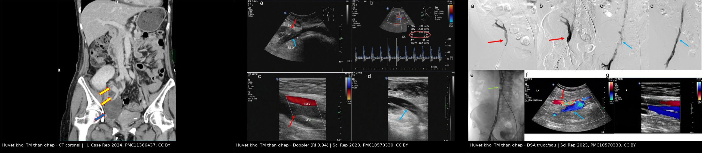
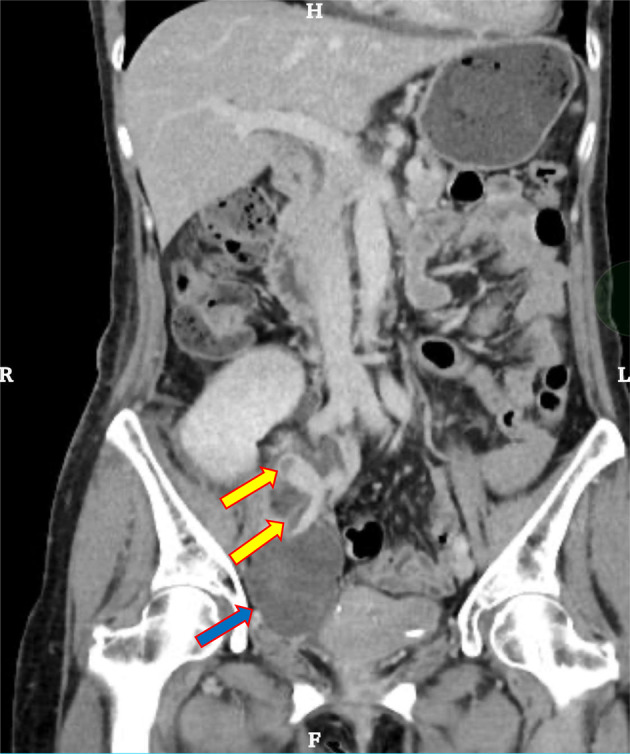
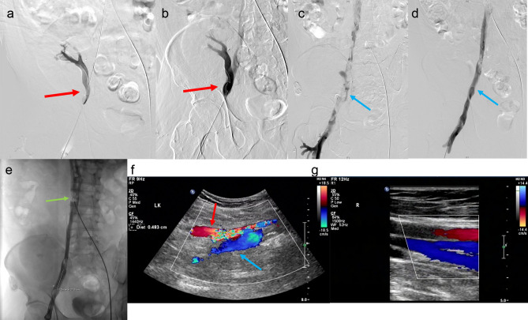

3122 — Huyết khối tĩnh mạch thận ghép CẤP: thận phù to + mất phổ tĩnh mạch + đảo dòng tâm trương
Tags: pattern:mat-pho-tinh-mach pattern:dao-chieu-tam-truong pattern:phu-than-ghep pattern:khuyet-thuoc-long-mach vung:than-ghep vung:cuong-mach-ghep anatomy:tinh-mach-than-ghep anatomy:tinh-mach-chau protocol:sieu-am-Doppler protocol:CTV-bung score:RI
Mức chắc chắn (certainty): tổng hợp y văn (literature synthesis) — ghép ba ca nguyên văn có ảnh: huyết khối tĩnh mạch ghép lan xuống tĩnh mạch chậu–đùi, cứu được bằng hút huyết khối cơ học + nong bóng (Sci Rep 2023, PMC10570330); huyết khối + hẹp miệng nối tĩnh mạch ngày 13, cứu bằng nong bóng (IJU Case Rep 2024, PMC11366437); huyết khối tái phát do hội chứng May–Thurner (Urol Case Rep 2026, PMC13320444); cộng một tổng quan có số (Diagnostics 2026, PMC13298574) và một tổng quan kỹ thuật hình ảnh (Abdom Radiol 2025, PMC12602614). Không có ca do nhóm tự chụp.
Câu hỏi thực hành: nữ 56 tuổi, ngày thứ 13 sau ghép thận, nước tiểu giảm dần trong 24 giờ, đau tức hố ghép, thận ghép to và căng khi sờ. Siêu âm tại giường: không thấy phổ tĩnh mạch, phổ động mạch chỉ còn sóng tâm thu, mất sóng tâm trương. Câu hỏi: đây là thải ghép cấp, hay tắc tĩnh mạch — và còn cứu được thận không? Bài chốt ba quyết định: (1) mất phổ tĩnh mạch + đảo dòng tâm trương là dấu hiệu đặc hiệu của tắc tĩnh mạch, không phải thải ghép; (2) thận phù to + RI rất cao không loại trừ được gì — RI là chỉ số không đặc hiệu, chỉ có/không phổ tĩnh mạch và hướng sóng tâm trương mới quyết định; (3) huyết khối tĩnh mạch ghép 1–3% nhưng là một trong những nguyên nhân hàng đầu mất ghép sớm — phải tìm nguyên nhân cơ học (chèn ép, hẹp miệng nối, May–Thurner) nếu không muốn tái phát sau khi đã cứu thận.
1. Tổng quan bệnh học – cơ chế hình ảnh: vì sao "tắc đường ra" làm thận chết nhanh
- Giải phẫu quyết định hình ảnh: thận ghép nằm ngoài phúc mạc ở hố chậu, tĩnh mạch thận người cho nối tận–bên vào tĩnh mạch chậu ngoài, động mạch nối vào động mạch chậu ngoài. Thận là tạng một cuống mạch, gần như không có bàng hệ — tắc tĩnh mạch = máu vào được mà không ra.
- Tần suất — bốn con số cần nhớ:
- Huyết khối tĩnh mạch thận ghép (TRVT) ~1–3% các ca ghép, phần lớn trong tuần đầu, là một trong những nguyên nhân thường gặp nhất của mất ghép sớm; nếu mảnh ghép đã hoại tử thì phải cắt thận ghép (Diagnostics 2026, PMC13298574).
- Khoảng rộng hơn trong y văn: 0,1–4,2%, và gần như toàn bộ ca không điều trị kịp đều mất thận (Urol Case Rep 2026, PMC13320444).
- Ghép với thận phải nguy cơ cao hơn vì tĩnh mạch phải ngắn, miệng nối khó, thời gian thiếu máu ấm dài hơn (Diagnostics 2026, PMC13298574).
- Trong 2.304 ca ghép một trung tâm, biến chứng mạch 2,34%, trong đó tắc tĩnh mạch 3 ca (0,13%) — hiếm nhưng kết cục rất xấu (Front Transplant 2023, PMC11235313).
- Cơ chế — hai nhóm nguyên nhân chồng lên nhau:
- Cơ học (hàng đầu): chèn ép tĩnh mạch bởi nang bạch huyết/máu tụ quanh thận, hẹp miệng nối tĩnh mạch, gấp góc/xoắn cuống, hội chứng May–Thurner (tĩnh mạch chậu chung trái bị động mạch chậu chung phải đè) — ca tái phát 2 lần của bài này chính là May–Thurner (Urol Case Rep 2026, PMC13320444).
- Yếu tố toàn thân: hạ huyết áp, thải ghép cấp, trạng thái tăng đông hậu phẫu, bệnh lý tăng đông di truyền/mắc phải, trẻ em (lòng mạch nhỏ) (Diagnostics 2026, PMC13298574).
- TẠI SAO hình ảnh thay đổi — vật lý của siêu âm Doppler:
- Doppler đo vận tốc, không đo tưới máu. Thận ghép bình thường có phổ động mạch liên tục, còn dòng tâm trương dương, RI khoảng 0,6–0,8.
- Khi tĩnh mạch tắc, áp lực trong nhu mô tăng → sức cản dòng vào tăng → RI tăng rất cao (ca gốc: RI 0,94, PSV −128 cm/s, EDV −46 cm/s) và sóng tâm trương đảo chiều: máu vào thì tâm thu, bật ngược ra thì tâm trương. Kiểu phổ hai chiều này được mô tả là dấu hiệu đặc hiệu (pathognomonic) của huyết khối tĩnh mạch ghép (Abdom Radiol 2025, PMC12602614).
- Muộn hơn, bàng hệ hình thành nên phổ động mạch có thể "bình thường hóa" trong khi thận vẫn đang chết — đây là lý do không bao giờ đọc một lần rồi kết luận.
- TẠI SAO CT có cản quang khác biệt: CT đo lượng iod đến nhu mô. Huyết khối tĩnh mạch → khuyết thuốc trong lòng tĩnh mạch (thấy rõ ở thì tĩnh mạch, 60–70 giây), thận to, ngấm thuốc kéo dài và không đều, mất phân biệt vỏ–tủy, thuốc trào ngược vào tĩnh mạch bàng hệ phía dưới chỗ tắc (IJU Case Rep 2024, PMC11366437).
- TẠI SAO thận chết nhanh: tắc tĩnh mạch → ứ máu, phù kẽ, chèn ép mao mạch → thiếu máu cục bộ nhu mô và huyết khối lan vào vi mạch; khi đã nhồi máu vỏ lan rộng thì tái thông mạch không hồi phục được nhu mô.
2. Mẫu hình + chẩn đoán phân biệt theo kiểu phổ và theo thời điểm (Gamut)
- Mẫu hình cốt lõi: giảm nước tiểu/thiểu niệu + thận ghép to, căng, đau + mất phổ tĩnh mạch + đảo dòng tâm trương động mạch (± phù chi cùng bên nếu huyết khối lan xuống tĩnh mạch chậu–đùi).
- Gamut theo kiểu phổ Doppler (quyết định tại giường):
- Mất phổ tĩnh mạch + phổ động mạch hai chiều (đảo tâm trương), RI rất cao → huyết khối tĩnh mạch ghép (kinh điển).
- Mất cả phổ động mạch lẫn tĩnh mạch → tắc động mạch ghép (bài 3153).
- Phổ còn, RI tăng nhẹ, không đảo tâm trương → thải ghép cấp, hoại tử ống thận cấp, nhiễm trùng, thuốc độc thận — chẩn đoán bằng sinh thiết, không bằng Doppler.
- Phổ còn + giãn đài bể thận → tắc nghẽn niệu quản (bài 3011).
- Phổ còn nhưng "tardus–parvus" → hẹp động mạch ghép/gấp góc (bài 3087).
- Gamut theo thời điểm:
- Ngày 0–7: huyết khối do kỹ thuật (xoắn, gấp góc, hẹp miệng nối), chèn ép bởi máu tụ/nang bạch huyết, hạ huyết áp, thải ghép tối cấp.
- Tuần 2–4: thải ghép cấp, nhiễm trùng, hẹp miệng nối niệu quản; huyết khối tĩnh mạch vẫn xảy ra (ca ngày 13 — PMC11366437).
- Tháng 2–6 trở đi: huyết khối do tắc nghẽn đường ra mạn (hẹp miệng nối), hội chứng May–Thurner, tăng đông — ca 4 tháng (PMC10570330) và ca tái phát 2 lần (PMC13320444).
- Ba câu hỏi đọc ảnh: (1) có phổ tĩnh mạch liên tục không? (2) sóng tâm trương của động mạch còn dương hay đã đảo? (3) có khối dịch quanh thận hoặc hẹp miệng nối không? Trả lời (1) "không" + (2) "đảo" → cấp cứu tĩnh mạch.
3. Bảng so sánh phân biệt (ma trận đối chiếu)
| Thực thể (entity) | Hình ảnh điển hình (Doppler/CT) | Chốt vào (rule-in) | Chốt loại (rule-out) | Gợi ý xác nhận |
|---|---|---|---|---|
| Huyết khối tĩnh mạch ghép (TRVT) | Mất phổ tĩnh mạch; động mạch đảo dòng tâm trương, RI 0,9–1,0 (ca gốc 0,94); thận to, giảm phân biệt vỏ–tủy; CT thì tĩnh mạch: khuyết thuốc trong lòng tĩnh mạch, thuốc trào bàng hệ | Mất phổ tĩnh mạch + đảo dòng tâm trương + thận to căng | Còn phổ tĩnh mạch liên tục + sóng tâm trương dương → không phải tắc tĩnh mạch | Doppler lặp 1–2 giờ; CTV thì tĩnh mạch; DSA |
| Tắc động mạch ghép | Mất cả hai phổ; CTA cụt đầu tại miệng nối, nhu mô không ngấm thì động mạch | Mất cả phổ động mạch + tĩnh mạch | Còn phổ động mạch → không phải tắc động mạch | CTA/DSA (bài 3153) |
| Hẹp miệng nối tĩnh mạch (không tắc) | Tăng vận tốc khu trú tại chỗ hẹp + phổ sau hẹp mất tính nhịp; thận có thể phù nhẹ; còn phổ tĩnh mạch | Tăng vận tốc khu trú + gradient áp lực qua miệng nối | Mất hoàn toàn phổ tĩnh mạch → đã tắc | Đo gradient, CTV, nong bóng (ngưỡng vận tốc chưa thống nhất trong y văn — đọc theo gradient) |
| Chèn ép tĩnh mạch bởi khối dịch/máu tụ | Khối giảm âm/không đồng nhất quanh thận đè cuống; phổ tĩnh mạch giảm hoặc mất cục bộ, hồi phục khi đổi tư thế/giảm khối | Khối quanh thận + mất phổ khu trú tại chỗ đè | Không có khối, huyết khối trong lòng mạch → TRVT thật | Siêu âm + CTV; chọc hút/dẫn lưu |
| Thải ghép cấp (TCMR/ABMR) | Phổ còn, RI tăng nhẹ, thận to; không khuyết thuốc, không huyết khối | Sốt, creatinin tăng, phổ còn, không khuyết thuốc | Mất phổ tĩnh mạch/đảo tâm trương → không phải thải ghép đơn thuần | Sinh thiết Banff + DSA/C4d |
| Hoại tử ống thận cấp (ATN) | Phổ bình thường, thận ngấm thuốc đều; chức năng hồi phục chậm | Chức năng chậm hồi phục sau thiếu máu lạnh, phổ bình thường | Mất phổ tĩnh mạch → tắc | Theo dõi nước tiểu; sinh thiết nếu kéo dài |
| Hội chứng May–Thurner (nguyên nhân nền) | Hẹp tĩnh mạch chậu chung trái do động mạch chậu chung phải đè; huyết khối tái phát cùng bên; CTV thấy dải chèn + dây xơ | Huyết khối tái phát + hẹp chỗ giao động–tĩnh mạch chậu | Không hẹp, không tái phát → tìm nguyên nhân khác | CTV/venography; stent tĩnh mạch chậu + kháng đông dài hạn |

Trái: CT thì tĩnh mạch, coronal — huyết khối trong tĩnh mạch thận ghép lan xuống tĩnh mạch chậu ngoài (mũi tên vàng) + máu tụ (mũi tên xanh). Giữa: Doppler — RI 0,94, phổ động mạch mất sóng tâm trương bình thường, lòng tĩnh mạch tăng âm không đều do huyết khối. Phải: DSA — khuyết thuốc tại chỗ đổ của tĩnh mạch ghép (a, b) và dòng thông lại sau hút huyết khối + nong bóng (c, d). Nguồn: IJU Case Rep 2024 (PMC11366437) và Sci Rep 2023 (PMC10570330), CC BY. Ảnh ghép letterbox, giữ nguyên khung và thang đo của tác giả.Đọc kỹ ba mẫu hình
- Phổ "hai chiều" là chốt, không phải RI: RI 0,94 rất cao nhưng RI cao đơn thuần gặp ở thải ghép, ATN, hẹp động mạch, hạ huyết áp. Cái đặc hiệu là sóng tâm trương đảo chiều — máu bật ngược vì không có đường ra.
- Thận to + giảm phân biệt vỏ–tủy là dấu phụ, xuất hiện sớm nhưng cũng gặp ở thải ghép cấp và viêm thận–bể thận.
- Huyết khối lan xuống chi là dấu lâm sàng quan trọng: phù–đau chi cùng bên (ca PMC10570330 có huyết khối từ tĩnh mạch khoeo đến tĩnh mạch chậu chung).
4. Protocol chụp + ngưỡng xử trí
- Bước 1 — Siêu âm Doppler tại giường (phút đầu tiên):
- Đầu dò linear 5–12 MHz, đặt ở hố chậu, khảo sát miệng nối tĩnh mạch–tĩnh mạch chậu ngoài, tĩnh mạch thận trong nhu mô, 3 vị trí nhu mô (cực trên/giữa/dưới).
- Ghi PSV, EDV, RI, hướng sóng tâm trương ở mỗi vị trí; đánh giá tính nén được của tĩnh mạch; đo kích thước thận (mm), tìm khối dịch/máu tụ quanh thận.
- Ngưỡng thực hành: mất phổ tĩnh mạch hoặc RI > 0,8 kèm đảo tâm trương → coi là huyết khối tĩnh mạch cho tới khi chứng minh ngược. RI đơn lẻ không dùng để chốt.
- So lần chụp trước: RI tăng ≥ 10% giữa hai lần chụp trong tháng đầu liên quan tới chức năng ghép chậm hồi phục (J Bras Nefrol 2020, PMC7860640).
- Bước 2 — CT tĩnh mạch (CTV) có cản quang:
- Thì tĩnh mạch 60–70 giây, lát ≤ 1 mm, MPR theo trục mạch; đọc miệng nối, tĩnh mạch chậu ngoài/chung, tĩnh mạch chủ dưới, tìm dải chèn của May–Thurner ở tĩnh mạch chậu chung trái.
- Không hoãn vì creatinin: một lần CTV rẻ hơn nhiều so với mất thận; giảm liều iod + hydrat hóa nếu còn nước tiểu.
- Bước 3 — Điều trị (quyết định theo giờ, không theo ngày):
- Kháng đông không phân đoạn (UFH) ngay, giữ APTT 60–80 giây (Sci Rep 2023, PMC10570330).
- Hút huyết khối cơ học/dược cơ học ± nong bóng tĩnh mạch nếu huyết khối trong lòng và còn nhu mô sống; đặt lưới lọc tĩnh mạch chủ dưới khi có huyết khối tự do nguy cơ thuyên tắc phổi (PMC10570330).
- Mổ lấy huyết khối + nối lại tĩnh mạch nếu tổn thương cơ học ở miệng nối, thất bại can thiệp, hoặc máu tụ chèn ép lớn.
- Cắt thận ghép khi nhu mô đã hoại tử (không ngấm thuốc, không hồi phục sau 24–48 giờ).
- Sau khi cứu được: tìm nguyên nhân cơ học — nong/stent chỗ hẹp, stent tĩnh mạch chậu cho May–Thurner, và kháng đông dài hạn ở ca có bất thường giải phẫu/tăng đông (Urol Case Rep 2026, PMC13320444).
flowchart TD
A[Giam nuoc tieu + than ghep to cang] --> B[Doppler tai giuong]
B --> C{Con pho tinh mach lien tuc?}
C -->|Khong| D{Song tam truong dong mach?}
D -->|Dao chieu / RI 0,9-1,0| E[Huyet khoi tinh mach ghep - CAP CUU]
D -->|Mat ca pho dong mach| F[Tac dong mach - xem bai 3153]
C -->|Co| G{Co khoi dich quanh than?}
G -->|Co| H[Chen ep tinh mach - dan luu / theo doi]
G -->|Khong| I[Thai ghep cap / ATN - sinh thiet]
E --> J[CTV thi tinh mach + UFH APTT 60-80s]
J --> K{Huyet khoi trong long + nhu mo con song?}
K -->|Co| L[Hut huyet khoi + nong bong / stent]
K -->|Khong| M[Mo lay huyet khoi hoac cat than ghep]
L --> N[Doppler lai 6-12 gio + tim nguyen nhan co hoc]
5. Biến thể bình thường và cạm bẫy
- RI cao ≠ tắc tĩnh mạch: RI 0,94 trong ca gốc nhưng RI cũng tăng ở thải ghép, ATN, hẹp động mạch, hạ huyết áp. Luôn đọc hướng sóng tâm trương.
- "Còn màu trên Doppler màu" ≠ còn dòng: nhiễu do gain cao, chuyển động hô hấp, nhịp tim nhanh tạo "dòng giả"; chỉ phổ xung mới xác nhận.
- Máu tụ chèn ép bị đọc thành huyết khối trong lòng: ca PMC11366437 có cả hai — máu tụ đè + huyết khối trong tĩnh mạch; điều trị chỉ nong bóng mà không xử lý khối chèn thì tái tắc.
- Bàng hệ làm phổ "bình thường hóa" sau vài ngày: thận vẫn đang phù và đang chết; đừng kết luận an toàn vì "phổ đã về bình thường".
- Tưởng huyết khối muộn là không cứu được: ca 4 tháng sau ghép vẫn cứu được chức năng bằng hút huyết khối + nong bóng (PMC10570330) — nhưng không hứa hồi phục nhu mô; phải nói rõ với gia đình.
- Bỏ sót May–Thurner: huyết khối tái phát 2 lần dù đã lấy huyết khối — chỉ stent tĩnh mạch chậu + kháng đông dài hạn mới cắt vòng tái phát (PMC13320444).
- Lẫn với huyết khối tĩnh mạch thận sơ sinh (bài 6111): cùng tên bệnh, khác hoàn toàn bối cảnh và tiên lượng — không dùng chung ngưỡng.
- Sai địa chỉ giải phẫu: thận ghép ở hố chậu, không ở vị trí thận native; đọc CT theo trục mạch chậu, không theo trục thận bình thường.
6. Tự lượng giá — Blind Quiz
Ca 1 — Nữ 56 tuổi, ngày 13 sau ghép thận, nước tiểu giảm. Nhìn ảnh trước, mô tả sau.

- Gợi ý lâm sàng: đau hố ghép, thận ghép căng; Doppler thấy mất dòng nhu mô thì tâm trương.
- Câu hỏi: Hai cấu trúc bị tổn thương là gì (mũi tên vàng và mũi tên xanh)? Vì sao vẫn thấy thuốc ở nhánh xa? Bước tiếp theo?
Bấm để hiện đáp án (findings + chẩn đoán)
- Dấu hiệu: khuyết thuốc trong lòng tĩnh mạch thận ghép lan xuống tĩnh mạch chậu ngoài (mũi tên vàng) + máu tụ quanh thận (mũi tên xanh); thuốc trào ngược vào tĩnh mạch bàng hệ phía dưới chỗ tắc.
- Chẩn đoán: huyết khối tĩnh mạch thận ghép + máu tụ chèn ép — không phải thải ghép.
- Bước tiếp theo: UFH ngay, rồi nong bóng/hút huyết khối qua da; xử lý khối chèn ép nếu còn.
- Nguồn: IJU Case Rep 2024 (PMC11366437), CC BY.
Ca 2 — Cùng bệnh cảnh, Doppler tại giường: RI 0,94.

- Câu hỏi: Dấu hiệu nào trên phổ đặc hiệu cho tắc tĩnh mạch? Vì sao RI một mình không đủ?
Bấm để hiện đáp án (findings + chẩn đoán)
- Dấu hiệu: RI 0,94, PSV −128 cm/s, EDV −46 cm/s, sóng tâm trương đảo chiều; lòng tĩnh mạch tăng âm không đều do huyết khối.
- Vì sao: áp lực nhu mô tăng vì không có đường ra → sức cản tăng → máu bật ngược thì tâm trương. RI cao đơn thuần gặp ở thải ghép/ATN/hạ huyết áp nên không đặc hiệu.
- Nguồn: Sci Rep 2023 (PMC10570330), CC BY.
Ca 3 — Bệnh nhân huyết khối tĩnh mạch ghép lan xuống chi, DSA trước và sau can thiệp.

- Câu hỏi: Vì sao kháng đông đơn thuần không đủ ở bệnh cảnh này? Hai việc phải làm cùng lúc với hút huyết khối?
Bấm để hiện đáp án (findings + chẩn đoán)
- Dấu hiệu: khuyết thuốc ở tĩnh mạch ghép và tĩnh mạch chậu–đùi (a, b); sau hút huyết khối cơ học + nong bóng, lòng mạch thông lại (c, d), Doppler kiểm tra thấy phổ tĩnh mạch liên tục.
- Vì sao: kháng đông không làm tan được cục lớn gây tắc hoàn toàn trong vài giờ; và nếu có chỗ hẹp thì huyết khối tái hình thành.
- Hai việc cùng lúc: UFH APTT 60–80 giây + tìm/xử lý nguyên nhân cơ học; cân nhắc lưới lọc tĩnh mạch chủ dưới khi huyết khối tự do.
- Nguồn: Sci Rep 2023 (PMC10570330), CC BY.
Bài liên quan chéo
- 3153 – Huyết khối – tắc động mạch thận ghép cấp (mặt động mạch của cùng cấp cứu)
- 3087 – Hẹp động mạch thận ghép (tardus–parvus)
- 3088 – Nang bạch huyết quanh thận ghép (chèn ép cuống mạch)
- 3011 – Biến chứng niệu quản sau ghép thận (tắc nghẽn, rò)
- 6111 – Huyết khối tĩnh mạch thận ở sơ sinh (cùng cơ chế mất phổ tĩnh mạch)
- 1909 – Hẹp tĩnh mạch cửa sau ghép gan (hẹp miệng nối tĩnh mạch ở tạng ghép khác)
Ảnh
images/3122_huyet-khoi-tm-than-ghep_CT-coronal_PMC11366437.jpg— CT thì tĩnh mạch, IJU Case Rep 2024 (PMC11366437), CC BY 4.0.images/3122_huyet-khoi-tm-than-ghep_US-Doppler_PMC10570330.jpg— Doppler, Sci Rep 2023 (PMC10570330), CC BY 4.0.images/3122_huyet-khoi-tm-than-ghep_DSA_PMC10570330.jpg— DSA trước/sau, Sci Rep 2023 (PMC10570330), CC BY 4.0.images/composite_huyet-khoi-tm-than-ghep.jpg— ảnh ghép letterbox 3 ảnh trên, CC BY 4.0.- Nguồn, giấy phép và ghi chú phái sinh từng ảnh:
images/CREDITS.md.
Không dùng để chẩn đoán độc lập khi chưa có người hướng dẫn.